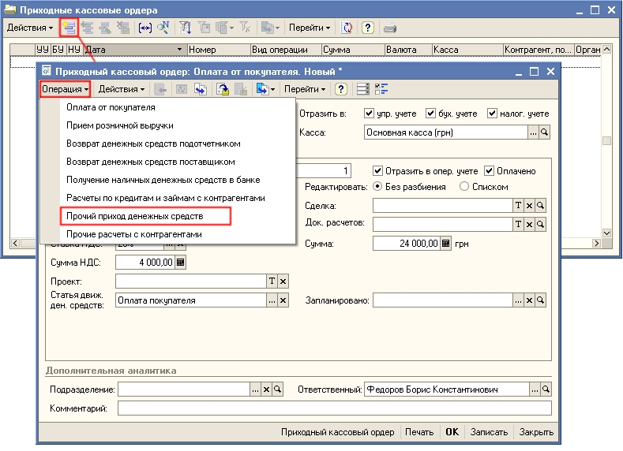
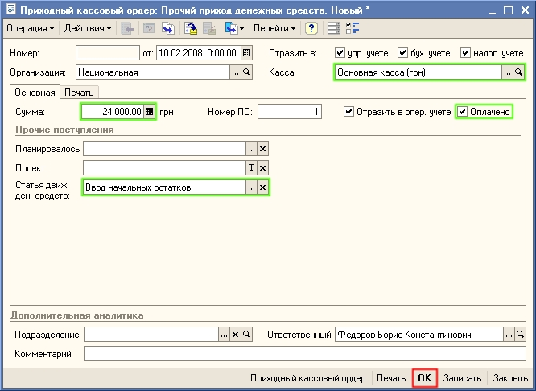
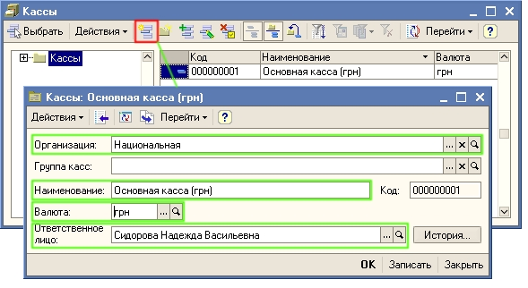
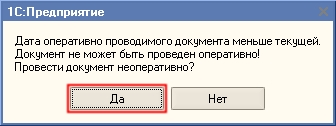

Информация об остатках наличных денежных средств вводится для каждой кассы, которые имеются в наличии в торговом предприятии. В одной кассе могут храниться денежные средства только одной организации и только в одной валюте. Для ввода остатков денежных средств используется документ Приходный кассовый ордер.
1. Откройте список документов Приходные кассовые ордера. Для этого в меню Документы выберите пункт меню Денежные средства - Касса - Приходные кассовые ордера.
2. Откройте форму нового документа для ввода остатков денежных средств в кассе предприятия. Для этого нажмите кнопку  или выберите меню Действия — Добавить в командной панели формы списка. Для добавления нового элемента можно также использовать кнопку INS на клавиатуре.
или выберите меню Действия — Добавить в командной панели формы списка. Для добавления нового элемента можно также использовать кнопку INS на клавиатуре.

3. В диалоговом окне формы документа нажмите на кнопку Операция и выберите вид операции Прочий приход денежных средств, так как это показано на рисунке.
После выбора вида операции диалоговое окно формы документа изменится. Заполните реквизиты документа, так как это показано на рисунке.

Дата документа (поле от). Остатки денежных средств должны вводится до момента начала работы с системой. Обычно остатки вводятся датой начала месяца или датой начала года.
Статья движения денежных средств. Статья движения денежных средств по умолчанию заполняется в соответствии с выбранным видом операции в приходном кассовом ордере (Прочие поступления денежных средств). Для того, чтобы изменить статью движения денежных средств надо нажать на кнопку выбора  и выбрать уже добавленную ранее статью движения денежных средств - Ввод начальных остатков.
и выбрать уже добавленную ранее статью движения денежных средств - Ввод начальных остатков.
Для заполнения реквизита Касса добавьте новую кассу в список касс торгового предприятия. Для этого в поле Касса документа нажмите на кнопку выбора  , откроется список Кассы.
, откроется список Кассы.
Добавьте информацию о новой кассе нажатием кнопки  (или нажмите клавишу Insert или выберите меню Действия — Добавить). Заполните в форме Касса значения реквизитов так, как показано на рисунке:
(или нажмите клавишу Insert или выберите меню Действия — Добавить). Заполните в форме Касса значения реквизитов так, как показано на рисунке:

Обязательно заполните ту валюту, в которой хранятся денежные средства в данной кассе (например - гривны) и организацию, денежные средства которой хранятся в данной кассе.
Внимание. В одной кассе хранятся денежные средства в одной валюте и для одной организации. Если в одной кассе организации торгового предприятия хранятся одновременно и гривны и доллары, то необходимо ввести в справочник две кассы: кассу с валютой гривны и кассу с валютой доллары.
Для заполнения реквизита Ответственное лицо нажмите на кнопку выбора  , откроется справочник "Физические лица". Выберите из списка того сотрудника (кассира), который ответственен за денежные средства в кассе.
, откроется справочник "Физические лица". Выберите из списка того сотрудника (кассира), который ответственен за денежные средства в кассе.
Внимание. При изменении информации о кассире (ответственном за денежные средства в кассе) сохраняется информация о прежнем кассире. Нажав на кнопку История можно всегда определить, кто в определенный период был ответственным за работу кассы.
После нажатия на кнопку ОК информация о кассе появится в списке Кассы.
Для выбора кассы в качестве кассы, для которой вводится остаток денежных средств нажмите в панели управления на кнопку Выбрать.
После заполнения информации о кассе в реквизит Сумма введите информацию об остатке денежных средств в гривнах в данной кассе.
После заполнения всех реквизитов, нажмите на кнопку ОК и проведите документ. Поскольку документ проводится более ранней датой, то документ проводится в неоперативном режиме. При проведении документа будет выдано соответствующее сообщение.

Нажмите на кнопку ДА и проведите документ.
Аналогичным образом зафиксируйте остатки денежных средств в остальных кассах организаций торгового предприятия.
Следующий раздел: «Заполнение сведений о складах торгового предприятия»